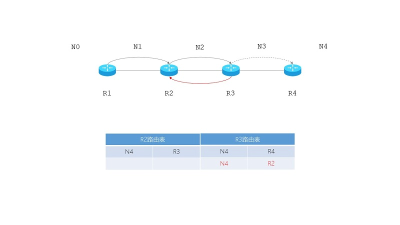

- 基本组成
- 首部：固定部分，20字节
- 数据部分：可变部分，最大为40字节
IP数据报格式
| 4bit |
4bit |
8bit |
16bit |
| 版本VER |
首部长度THL |
区分服务DSCP |
总长度TL |
| 标识ID |
标志FLAG |
片偏移FRAG OFFSET |
| 生存时间TTL |
协议PRO |
首部校验和CHKSUM |
| 源地址SRC |
| 目标地址DST |
| 数据DATA[长度可变，最大40字节] |
- 版本 VER
- Version
- 4个bit
- 0100，表示IP v4
- 首部长度 THL
- Total Head Length
- 4个bit；以 4字节 为单位
- 最小值为0101，最短首部长度为：5*4=20字节
- 最大值为1111，最大首部长度为：(24-1)*4=15*4=60字节
- 总长度 TL
- Total Length
- 16bit；以 字节 为单位
- 首部和数据部分总和
- 最大数值为1111 1111 1111 1111，最大长度为216-1=65535字节
- 以太网规定：IP数据报的最大传输单元MTU长度为1500字节；长度超过MTU就必须分片，单独封帧再传输
- 标识 ID、标记 FLAG、片偏移部分 FRAG OFFSET
- 这3个字段用于IP数据报分片
- 标识 ID：16bit；同一个数据报的不同分片应具有相同的标识；每产生一个数据报[不是数据分片]就加1，充当计算器的功能
- 标记 FLAG：3bit，包括：MF+DF+保留位0
MF：More Fragment；1：还有分片；0：没有分片
DF：Don’t Fragment；1：不允许分片；0：允许分片
- 片偏移部分 FRAG OFFSET：13bit，以 8字节 为单位，指出分片数据报的数据部分在原数据报中的偏移部分；必须为整数
- 生存时间 TTL
- Time To Live
- 8bit，以秒s为单位
- 最大生存时间是255s
- 早期代表时间；现在表示可通过的路由数/跳数
- 每次转发时就减1；如果为0就丢弃，不转发
- 防止IP数据报在网络中无限制的兜圈子

TTL的重要性
- 协议 PRO
- Protocol
- 8bit
- 数据部分是何种协议，如ICMP、TCP、UDP、OSPF等
常用协议字段
| Name |
ICMP |
IGMP |
TCP |
UDP |
IPv6 |
OSPF |
| Value |
1 |
2 |
6 |
17 |
41 |
89 |
- 首部校验和 CHKSUM
- 16bit
- 用来校验数据传输过程中，首部是否出现差错
- 每经过一个路由器，都要重新计算
- 为加快转发速度，IPv6中不再计算
- 计算过程
初始化：将首部校验和字段设置为0!!!
头部分割：将IP首部每16bit分为一组；20个字节的首部最终被分成10组；每组2个字节/16bit
累计求和：所有分组累计求和，即每次用前面的累积和去加后面的分组；如果求和结果产生进位，则将进位加到最低位，如 0x10001 → 0x0002
结果取反：对最终结果求反码，即得到校验和
字段回填：将计算结果填入首部校验和字段
- 接收端验证过程
将收到的IP数据报首部同样按16位分组
对所有分组（包括校验和字段）进行二进制反码求和
如果结果全为1（即0xFFFF），则校验通过，数据未出错
如果结果不全为1，则数据在传输过程中出现错误；被丢弃
- 源地址 SRC
- 32bit
- 目标地址 DST
- 32bit
- 数据部分 DATA
- 长度可变，最大40个字节
[] 已经某IP报首部字段THL为0101，总长度字段TL为0000 0011 1111 1100，求数据部分字段DATA的长度
- 首部长度为(0101)2*4 = 5*4 = 20 字节
- 总长度为(0000 0011 1111 1100)2 = 1020 字节
- 故：数据部分长度为：总长度-首部长度 = 1020-20 = 1000 字节
[] 已知采用固定长度首部的数据报，数据部分位3800字节，如何分片？（分片不超过1420字节）
- 数据报长度=固定部分+可变部分=首部+数据=20+3800=3820字节
- 分片后不能超过1420字节，所以每片的数据部分为最大为1400字节
- 假设标识ID为12345
IP数据报的分片
|
总长度TL |
标识ID |
更多分片MF |
不要分片DF |
FRAG OFFSET |
| 原始数据报 |
20+3800 |
12345 |
0 |
0 |
0 |
| 分片1 |
20+1400 |
1234 |
1 |
0 |
0/8 |
| 分片2 |
20+1400 |
1234 |
1 |
0 |
1400/8 |
| 分片3 |
20+1000 |
1234 |
0 |
0 |
2800/8 |
[] 采用固定首部的某IP数据报长度为1500B，目标网络的MTU是800B，求分片数量和偏移
原始数据报
| Header |
Data |
| 20B |
1480B，编号为0-1479 |
改进方案
| 分片1 |
片偏移 |
分片2 |
片偏移 |
| 20B |
780B：0-779 |
0/8=0 |
20B |
700B：780-1479 |
780/8=97.5 |
- 偏移量不是整数；分片方案失败
- 调整分片长度，不超过800即可
- 取8的整倍数，即：[780/8]*8=776B
最终方案
| 分片1 |
片偏移 |
分片2 |
片偏移 |
| 20B |
776B：0-775 |
0/8=0 |
20B |
704B：776-1479 |
776/8=97 |
[] 某IP首部数据以16进制表示为 4500 003C 0000 4000 4011 0000 C0A8 0001 C0A8
00C7，求其首部校验和
- 给出的首部数据已经是16进制了
- 首部校验和已经初始为 0000：第6个分组
- 累计求和
4500 + 003C = 453C
453C + 0000 = 453C
453C + 4000 = 853C
853C + 4011 = C54D
C54D + 0000 = C54D
C54D + C0A8 = 185F5 → 85F6
85F6 + 0001 = 85F7
85F7 + C0A8 = 1469F → 46A0
46A0 + 00C7 = 4767
- 结果取反
~4767 = B898
- 字段回填
4500 003C 0000 4000 4011 B898 C0A8 0001 C0A8 00C7